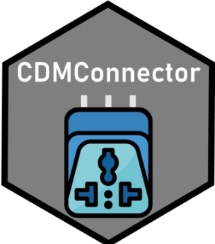

DBI = Database Interface
Various packages the driver functionality (e.g. RPostgres, odbc, DatabaseConnector)
[1] "GiBleed" "synthea-allergies-10k"
[3] "synthea-anemia-10k" "synthea-breast_cancer-10k"
[5] "synthea-contraceptives-10k" "synthea-covid19-10k"
[7] "synthea-covid19-200k" "synthea-dermatitis-10k"
[9] "synthea-heart-10k" "synthea-hiv-10k"
[11] "synthea-lung_cancer-10k" "synthea-medications-10k"
[13] "synthea-metabolic_syndrome-10k" "synthea-opioid_addiction-10k"
[15] "synthea-rheumatoid_arthritis-10k" "synthea-snf-10k"
[17] "synthea-surgery-10k" "synthea-total_joint_replacement-10k"
[19] "synthea-veteran_prostate_cancer-10k" "synthea-veterans-10k"
[21] "synthea-weight_loss-10k" "empty_cdm" Download and connect to an example CDM database
── # OMOP CDM reference (duckdb) of Synthea ────────────────────────────────────• omop tables: person, observation_period, visit_occurrence, visit_detail,
condition_occurrence, drug_exposure, procedure_occurrence, device_exposure,
measurement, observation, death, note, note_nlp, specimen, fact_relationship,
location, care_site, provider, payer_plan_period, cost, drug_era, dose_era,
condition_era, metadata, cdm_source, concept, vocabulary, domain,
concept_class, concept_relationship, relationship, concept_synonym,
concept_ancestor, source_to_concept_map, drug_strength, cohort_definition,
attribute_definition• cohort tables: -• achilles tables: -• other tables: -cdmFromCon function creates a list of references to the cdm tables and does various validation checks
This object is a list of table references (like Andromda)
# Source: table<main.person> [?? x 18]
# Database: DuckDB v0.10.0 [root@Darwin 23.0.0:R 4.3.1//var/folders/xx/01v98b6546ldnm1rg1_bvk000000gn/T//RtmpbPUuuM/file50df12d7b2e8.duckdb]
person_id gender_concept_id year_of_birth month_of_birth day_of_birth
<int> <int> <int> <int> <int>
1 1 8532 1961 10 7
2 2 8507 2020 1 13
3 3 8532 1954 5 26
4 4 8507 1967 4 22
5 5 8532 1959 2 21
6 6 8507 1938 6 1
7 7 8532 1970 4 26
8 8 8532 1945 8 13
9 9 8532 2000 3 17
10 10 8507 1974 2 5
# ℹ more rows
# ℹ 13 more variables: birth_datetime <dttm>, race_concept_id <int>,
# ethnicity_concept_id <int>, location_id <int>, provider_id <int>,
# care_site_id <int>, person_source_value <chr>, gender_source_value <chr>,
# gender_source_concept_id <int>, race_source_value <chr>,
# race_source_concept_id <int>, ethnicity_source_value <chr>,
# ethnicity_source_concept_id <int>We can get some basic info about the cdm using snapshot.
# A tibble: 13 × 2
key value
<chr> <chr>
1 cdm_name "Synthea"
2 cdm_source_name "Synthea"
3 cdm_description "Synthea Synthetic Data"
4 cdm_documentation_reference "https://synthetichealth.github.io/sy…
5 cdm_version "5.3.1"
6 cdm_holder ""
7 cdm_release_date "2023-06-16"
8 vocabulary_version "v5.0 22-JUN-22"
9 person_count "213953"
10 observation_period_count "213953"
11 earliest_observation_period_start_date "1923-11-26"
12 latest_observation_period_end_date "2023-06-23"
13 snapshot_date "2024-04-26" Most common drug ingredients
library(dplyr, warn.conflicts = F)
cdm$drug_era %>%
left_join(cdm$concept, by = c("drug_concept_id" = "concept_id")) %>%
select(drug_concept = concept_name, drug_concept_id) %>%
count(drug_concept, drug_concept_id, sort = T) # Source: SQL [?? x 3]
# Database: DuckDB v0.10.0 [root@Darwin 23.0.0:R 4.3.1//var/folders/xx/01v98b6546ldnm1rg1_bvk000000gn/T//RtmpbPUuuM/file50df12d7b2e8.duckdb]
# Ordered by: desc(n)
drug_concept drug_concept_id n
<chr> <int> <dbl>
1 clopidogrel 1322184 34028
2 nitroglycerin 1361711 25986
3 simvastatin 1539403 22232
4 amlodipine 1332418 21961
5 warfarin 1310149 15389
6 digoxin 1326303 15389
7 verapamil 1307863 15385
8 alteplase 1347450 11109
9 acetaminophen 1125315 11024
10 hydrocodone 1174888 7957
# ℹ more rowsInspect the SQL
cdm$drug_exposure %>%
left_join(cdm$concept, by = c("drug_concept_id" = "concept_id")) %>%
select(drug_concept = concept_name) %>%
count(drug_concept, sort = T) %>%
show_query()<SQL>
SELECT drug_concept, COUNT(*) AS n
FROM (
SELECT concept_name AS drug_concept
FROM main.drug_exposure
LEFT JOIN main.concept
ON (drug_exposure.drug_concept_id = concept.concept_id)
) q01
GROUP BY drug_concept
ORDER BY n DESCCDMConnector has some helper functions to make cross platform queries easier.
A good example is the quantile function which is quite important for data analysis but not implemented the same on all database systems.
cdm$person %>%
group_by(gender_concept_id) %>%
summarize_quantile(year_of_birth, probs = seq(0,1, by = .1)) # Source: SQL [2 x 12]
# Database: DuckDB v0.10.0 [root@Darwin 23.0.0:R 4.3.1//var/folders/xx/01v98b6546ldnm1rg1_bvk000000gn/T//RtmpbPUuuM/file50df12d7b2e8.duckdb]
# Ordered by: year_of_birth
gender_concept_id p0_value p10_value p20_value p30_value p40_value p50_value
<int> <int> <int> <int> <int> <int> <int>
1 8507 1923 1930 1939 1948 1958 1968
2 8532 1923 1932 1942 1952 1962 1972
# ℹ 5 more variables: p60_value <int>, p70_value <int>, p80_value <int>,
# p90_value <int>, p100_value <int>This saves us from writing a lot of SQL
cdm$person %>%
group_by(gender_concept_id) %>%
summarize_quantile(year_of_birth, probs = seq(0,1, by = .1)) %>%
show_query()<SQL>
SELECT
gender_concept_id,
MIN(CASE WHEN (accumulated >= (0.0 * total)) THEN year_of_birth WHEN NOT (accumulated >= (0.0 * total)) THEN NULL END) AS p0_value,
MIN(CASE WHEN (accumulated >= (0.1 * total)) THEN year_of_birth WHEN NOT (accumulated >= (0.1 * total)) THEN NULL END) AS p10_value,
MIN(CASE WHEN (accumulated >= (0.2 * total)) THEN year_of_birth WHEN NOT (accumulated >= (0.2 * total)) THEN NULL END) AS p20_value,
MIN(CASE WHEN (accumulated >= (0.3 * total)) THEN year_of_birth WHEN NOT (accumulated >= (0.3 * total)) THEN NULL END) AS p30_value,
MIN(CASE WHEN (accumulated >= (0.4 * total)) THEN year_of_birth WHEN NOT (accumulated >= (0.4 * total)) THEN NULL END) AS p40_value,
MIN(CASE WHEN (accumulated >= (0.5 * total)) THEN year_of_birth WHEN NOT (accumulated >= (0.5 * total)) THEN NULL END) AS p50_value,
MIN(CASE WHEN (accumulated >= (0.6 * total)) THEN year_of_birth WHEN NOT (accumulated >= (0.6 * total)) THEN NULL END) AS p60_value,
MIN(CASE WHEN (accumulated >= (0.7 * total)) THEN year_of_birth WHEN NOT (accumulated >= (0.7 * total)) THEN NULL END) AS p70_value,
MIN(CASE WHEN (accumulated >= (0.8 * total)) THEN year_of_birth WHEN NOT (accumulated >= (0.8 * total)) THEN NULL END) AS p80_value,
MIN(CASE WHEN (accumulated >= (0.9 * total)) THEN year_of_birth WHEN NOT (accumulated >= (0.9 * total)) THEN NULL END) AS p90_value,
MIN(CASE WHEN (accumulated >= (1.0 * total)) THEN year_of_birth WHEN NOT (accumulated >= (1.0 * total)) THEN NULL END) AS p100_value
FROM (
SELECT
q01.*,
SUM("..n") OVER (PARTITION BY gender_concept_id ORDER BY year_of_birth ROWS UNBOUNDED PRECEDING) AS accumulated,
SUM("..n") OVER (PARTITION BY gender_concept_id) AS total
FROM (
SELECT gender_concept_id, year_of_birth, COUNT(*) AS "..n"
FROM main.person
GROUP BY gender_concept_id, year_of_birth
) q01
) q01
GROUP BY gender_concept_id[1] "covid_19.json" "type_2_diabetes.json"# A tibble: 2 × 5
cohort_definition_id cohort_name cohort json cohort_name_snakecase
<int> <chr> <list> <list> <chr>
1 1 covid_19 <named list> <chr> covid_19
2 2 type_2_diabetes <named list> <chr> type_2_diabetes # Source: table<main.cohort> [?? x 4]
# Database: DuckDB v0.10.0 [root@Darwin 23.0.0:R 4.3.1//var/folders/xx/01v98b6546ldnm1rg1_bvk000000gn/T//RtmpbPUuuM/file50df12d7b2e8.duckdb]
cohort_definition_id subject_id cohort_start_date cohort_end_date
<int> <dbl> <date> <date>
1 1 2619 2021-01-08 2021-01-28
2 1 7517 2020-11-29 2020-12-27
3 1 76609 2021-01-25 2021-03-03
4 1 81731 2020-09-15 2020-10-04
5 1 98081 2020-07-06 2020-08-09
6 1 112496 2020-11-04 2020-12-03
7 1 126959 2020-08-30 2020-10-03
8 1 128111 2020-07-07 2020-08-05
9 1 148438 2020-11-11 2020-11-25
10 1 152652 2021-08-16 2021-09-01
# ℹ more rows# A tibble: 2 × 3
cohort_definition_id number_records number_subjects
<int> <int> <int>
1 1 18744 18744
2 2 0 0# A tibble: 2 × 2
cohort_definition_id cohort_name
<int> <chr>
1 1 covid_19
2 2 type_2_diabetes# A tibble: 2 × 7
cohort_definition_id number_records number_subjects reason_id reason
<int> <int> <int> <int> <chr>
1 1 18744 18744 1 Qualifying init…
2 2 0 0 1 Qualifying init…
# ℹ 2 more variables: excluded_records <int>, excluded_subjects <int>clopidogrel <- CodelistGenerator::getDescendants(cdm, 1322184)
nitroglycerin <- CodelistGenerator::getDescendants(cdm, 1361711)
cdm <- generateConceptCohortSet(
cdm,
name = "cohort",
conceptSet = list("clopidogrel" = clopidogrel$concept_id,
"nitroglycerin" = nitroglycerin$concept_id),
limit = "first",
requiredObservation = c(0, 0),
end = "observation_period_end_date",
overwrite = TRUE
)
cohortCount(cdm$cohort)# A tibble: 2 × 3
cohort_definition_id number_records number_subjects
<int> <int> <int>
1 1 29051 29051
2 2 24596 24596cdm2 <- cdm %>%
cdmSubsetCohort(cohortTable = "cohort", cohortId = 1, verbose = T)
tally(cdm$person)# Source: SQL [1 x 1]
# Database: DuckDB v0.10.0 [root@Darwin 23.0.0:R 4.3.1//var/folders/xx/01v98b6546ldnm1rg1_bvk000000gn/T//RtmpbPUuuM/file50df12d7b2e8.duckdb]
n
<dbl>
1 213953# Source: SQL [1 x 1]
# Database: DuckDB v0.10.0 [root@Darwin 23.0.0:R 4.3.1//var/folders/xx/01v98b6546ldnm1rg1_bvk000000gn/T//RtmpbPUuuM/file50df12d7b2e8.duckdb]
n
<dbl>
1 29051# Source: SQL [?? x 8]
# Database: DuckDB v0.10.0 [root@Darwin 23.0.0:R 4.3.1//var/folders/xx/01v98b6546ldnm1rg1_bvk000000gn/T//RtmpbPUuuM/file50df12d7b2e8.duckdb]
person_id observation_concept_id start_date end_date type_concept_id domain
<int> <int> <date> <date> <int> <chr>
1 37 4230911 2023-01-08 2023-01-08 38000267 proce…
2 927 4162736 2021-01-29 2021-01-29 38000267 proce…
3 1320 4078793 2018-01-14 2018-01-14 38000267 proce…
4 1791 4202451 2015-01-05 2015-01-05 38000267 proce…
5 7393 4078793 2022-10-28 2022-10-28 38000267 proce…
6 7692 4078793 2015-08-20 2015-08-20 38000267 proce…
7 8813 4078793 2022-10-09 2022-10-09 38000267 proce…
8 8919 4336464 2008-02-13 2008-02-13 38000267 proce…
9 11434 4202451 2016-05-01 2016-05-01 38000267 proce…
10 15730 4336464 2019-05-26 2019-05-26 38000267 proce…
# ℹ more rows
# ℹ 2 more variables: observation_concept_name <chr>, type_concept_name <chr>Save as csv, parquet, or duckdb
Experimental